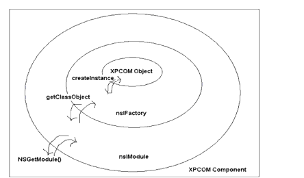
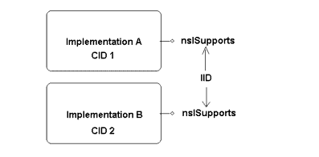

CHAPTER 4 Tutorial :
Creating the Component Code
Topics covered in this chapter:
- "What We'll Be Working On"
- "Overview of the WebLock Module Source"
- "Digging In: Required Includes and Constants"
- "webLock1.cpp"
This chapter goes over the basic code required to handle the relationship between your component and XPCOM. Having the component found and registered properly is the goal of this first chapter of the tutorial. In the subsequent chapters, we can begin to work on the example WebLock component functionality itself.
`
What We'll Be Working On
The component we'll be working on in this book controls a special mode in your browser that prevents users from leaving the current domain or a set of safe domains. Once enabled, this weblock mode is password protected and persists until it is turned off by the password holder. It can be used to make the browser into a safe viewer for children, or for targeted "kiosk browsing," where the content is restricted to a particular server. Figure 1 shows the icon that is used to activate the web lock mode (leftmost in the status bar) once you have installed the WebLock component and the extra user interface.
- Figure 1. Web Lock User Interface
Most of the actual work in the WebLock component is preparing the component itself, finding the XPCOM interfaces the component needs to use, and hooking into existing functionality within the Gecko Browser.
Component Registration
All XPCOM components-whether they're stored in shared libraries (DLLs or DSOs), JavaScript files, or some other file-need to be registered before they can be used. Registration is a process that happens in all XPCOM applications, whether they're embedded Gecko clients, Mozilla, Netscape 7, Compuserve, or any other software that uses XPCOM. Registration provides the information that applications need in order to use components properly.
The WebLock component must do a number of things to register itself. Specifically, the component library has to contain implementations for the component-related interfaces described in this chapter: nsIModule and nsIFactory, which are entry points for your implementation code.
Once your component implements these interfaces, the rest of the registration process itself is simple. Applications typically use regxpcom, described in the next section.
The regxpcom Program
An explicit way to register a component is to run the application regxpcom. Without any arguments passed to regxpcom, the program registers the component in the default component registry. We suggest that when you are testing your component in the Mozilla or Netscape client, you copy your component into the "components" directory in the client's installation folder. When it is copied there, run regxpcom from the command line to register that component and all the others in that directory.
Note: Several new options have been added to regxpcom in versions 1.4 and later. You can run regxpcom with the -h option to see full usage options.
Registration Alternatives
A Gecko embedding application may provide other ways to register XPCOM components. XPInstall, the cross-platform installation technology that Mozilla uses to install the browser and other components, is one such alternative. It is described further in the chapter "Tutorial: Packaging WebLock" on page 157. You should consult with the authors of the application you wish to extend to see if there are other supported ways.Overview of the WebLock Module Source
As we mentioned in the previous section, components have layers. There are three main parts to every XPCOM Component. From the innermost and moving outward, the first object is the XPCOM object. This is the object that contains the business logic, that implements functionality such as starting a network download, implementing interfaces that listen to the download progress, or providing a new content type handler. In Weblock, this is the part that brings together various Gecko services and prevents users from leaving the list of acceptable domains. In a way, he factory and module layers are glue to plug the XPCOM object into the larger XPCOM system.
One layer above the object itself is the nsIFactory object. This object provides basic abstraction of the XPCOM object itself. As you can see in the diagram in Figure 2, the main accessor for the XPCOM object is CreateInstance, which is expected to return the object that matches a given CID and IID pair.
Moving another layer outward is the nsIModule. This interface provides yet another abstraction of the nsIFactory object, and may allow for multiple nsIFactory objects. The key to this interface is that the return type of getClassObject does not have to be an nsIFactory. Instead, the nsIModule can ask for implementation details about the XPCOM object. This is very useful if the caller is required to know information about the component like its threading module, whether it's singleton or not, its implementation language, and so forth. The interface used in this case is nsIClassInfo. Starting from the outside in, Figure 2 represents the sequence for constructing an XPCOM object.

- Figure 2. Onion Peel View of XPCOM Component Creation
Before we begin looking at the various parts of the component and how they'll be implemented in the source, let's look at the module in weblock.cpp as a whole to see where we're going. The source we're referring to is listed in its entirety at the end of this chapter (see "webLock1.cpp" on page 68).
The source file for the WebLock component contains three classes. In order to make the WebLock component work in Mozilla, you have to implement a new interface to the WebLock component, iWebLock, where the actual work specific to the the web locking features happens. You also have to create WebLockModule to implement the necessary nsIModule interface, and you have to create WebLockFactory to implement nsIFactory and create a factory that hands instances of your component to clients. These three interface implementations-of the component functionality, of the nsIModule interface, and of the nsIFactory interface that creates and manages instances for clients-are the basic sets of code you need to write to create an XPCOM component.
Digging In: Required Includes and Constants
Let's take a look at the first several lines of code in the component and discuss what they mean in XPCOM. The includes and definitions at the top of an XPCOM source file can give you an idea about some of the data types and techniques we'll be discussing more in the upcoming chapters.
For example, MOZILLA_STRICT_API is a variable that shields you from certain private, non-XPCOM headers. For example, including nsIComponentManager.idl without MOZILLA_STRICT_API defined will include the following headers, which are not supported across versions (unfrozen):
These variables are picked up by files that do not specify themselves as MOZILLA_STRICT_API.
- Figure 3. Listing 1: Includes and Constants in weblock1.cpp
nsIModule.h and nsIFactory.h are required to build your module successfully. They define the module and factory interfaces, and they contain a couple of important macros as well (see the following chapter for information about using these macros). The two other includes, nsIComponentManager.h and nsIComponentRegistrar.h, provide functions such as RegisterFactoryLocation that are required to implement the module and factory classes in your code.
Identifiers in XPCOM
The series of nsIID variables initialized here are actually classes created for handing the 128 bit identifiers that XPCOM uses to support contractual relationships between the client and component interfaces. The variable kIFactoryIID, for example, provides methods like Equals() that can be used to facilitate comparisons in the code, as in the following example from the Mozilla source in Figure 4.
if (aIID.Equals(NS_GET_IID(nsISupports))) { *aInstancePtr = (void*)(nsISupports*)this; NS_ADDREF_THIS(); return NS_OK; }
- Figure 4. Listing 2: Using Class Methods to Handle Identifiers
Finally, SAMPLE_CID is an example of the CID that uniquely identifies each component. All of the 128 bit numbers used in XPCOM-the class and the interface IDs-are examples of UUIDs, or universal unique identifiers, which were discussed in the "Object Interface Discovery" section of the chapter "What Is XPCOM?"
Now that we've looked at the preliminaries, it's time to discuss the classes that this module provides and the way that they define the relationships of the component in XPCOM.
Coding for the Registration Process
When XPCOM discovers your component for the first time (via XPInstall or regxpcom, both of which are discussed in "Component Installation Overview"), the first thing it tries to do is load your library and find the symbol NSGetModule. When this special entry point is called, it is passed XPCOM's Component Manager and the location of the shared library where the component lives.
The Component Manager is an interface implemented by XPCOM that encapsulates the creation of objects and provides summary information about all registered components. The location on disk is passed via another interface named nsIFile. This interface is XPCOM's abstraction of files and directories. An nsIFile object is usually a file or directory on a local volume, but it may represent something on a network volume as well.
XPCOM expects a successful call to NSGetModule to return an implementation of the interface nsIModule. When you write a XPCOM component, you implement nsIModule to do all of the necessary registration, unregistration, and object creation. nsIModule has four methods that must be implemented.
The Registration Methods
Two closely related registration methods are declared below.
RegisterSelf is called when a component is first registered with XPCOM. It is only called once, which gives you a chance to add any one time setup functionality. The RegisterSelf call allows your component to tell XPCOM exactly what it supports. Note that whatever you do in RegisterSelf should be undone in UnregisterSelf.
First, the NSGetModule entry point is called in your component library, and it returns an interface pointer to a nsIModule implementation. Then XPCOM calls RegisterSelf, passing parameters that we'll examine here.
The RegisterSelf Method
The first parameter is the nsIComponentManager, which provides a kind of entry point into managing the registration process. You can QueryInterface it to access to the other component management interfaces described below.
Your RegisterSelf method may call QueryInterface on the nsIComponentManager interface parameter to obtain the nsIComponentRegistrar or nsIServiceManager. nsIServiceManager can be used to obtain a singleton service, which can be useful if you have to register with a service other than the nsIComponentRegistrar if necessary. For example, you may want to get the service that is responsible for an event you want to be notified about. See the section "Getting Called at Startup" on page 91 for an example of this.
The second parameter in RegisterSelf is the location of the component being registered. This parameter is useful when the component needs to know where it has been installed or registered-as, for example, when other files must be stored or accessed relative to the component. This method is only called once, so you have to persist the location if you are going to use it later.
The next two parameters are usually passed into the nsIComponentRegistrar methods and used by XPCOM to determine how to handle the component's registration. The aLoaderStr parameter, which is opaque and should not be modified, distinguishes components that are loaded from the same location specified by the nsIFile parameter. A single ZIP archive may store several XPCOM components, where every component in the archive has the same nsIFile parameter but the aLoaderStr parameter can be used to refer to the location within the ZIP archive.
The last parameter specifies what kind of loader to use on the component. This is reserved as an optimization, for the most part, but it can be a useful way to extend XPCOM. Since XPCOM already knows internally what kind of file it has just loaded and called RegisterSelf on, passing this value to the registration methods is a shortcut for determining what kind of component is being registered.
nsIComponentRegistrar Methods
To tell XPCOM what implementation is in the component library, call this method:
The last three parameters are the same as the three passed into the RegisterSelf method of nsIModule objects. All you have to do is forward these parameters from your RegisterSelf call into this method, leaving just the first three parameters.
For any class that implements an XPCOM interface, the implementation must have a class identifier if it is to be shared with other parts of code via XPCOM. This identifier, called a CID, uniquely specifies the implementation. This CID can be created via the tool uuidgen on most operating systems, as in the sidebar above ("The Many Faces of the XPCOM Component Manager"). Given a CID and an IID, you can refer to any class in XPCOM. Consider the following:

- Figure 5. Figure X: Referencing Objects by ID
In this case, you have two implementations of the nsISupports interface. Each implementation has a separate CID. The interface also as an IID which is the same for both implementations. When specifying implementation A, the two required pieces of information are the CID of A and the IID of the interface that A supports. The code to register such an object is simple:
Unregistration follows the same logic. To unregister, all you have to do is pass the CID and the file which is passed into UnregisterSelf.
Creating an Instance of Your Component
The example above uses a CID, but after the component is registered, anyone that uses XPCOM can access your classes if they know either the contract ID or CID. (Note that RegisterSelf method above does not register a contract ID-it simply passes null. This prevents clients from ever accessing the component with a contract ID.)
To be accessible to others, you need to publish the CID and/or contract ID of the component along with the interfaces it supports. Given the example above, someone could create the Sample object via the component manager as follows:
In the above snippet, we assume that the component manager has been initialized. In many cases this value is passed in or easily accessible. If not, it can always be obtained by a call to NS_GetComponentManager(). A listing of this and other global XPCOM functions is in Appendix B: The XPCOM API Reference.
The first parameter of the call to CreateInstance specifies the component the client code is looking for, which is the same value passed to RegisterFactoryLocation. The next parameter is for aggregation, which the WebLock component does not support. The third parameter is the interface used to talk to the component. The last parameter is the out variable which will contain a valid object if and only if the method succeeds1. The implementation of CreateInstance will ensure that the result will support the passed IID, kISupportsIID. The type of the variable sample should match the IID passed in as kISupportsIID.
When CreateInstance is called, XPCOM looks through all registered components to find a match for the given CID. XPCOM then loads the component library associated with the CID if it isn't loaded already. XPCOM then calls the function NSGetModule on the library. Finally, it calls the method GetClassObject on the module. This method, which you must implement in your component code, is expected to return an nsIFactory object for a give CID/IID pair. To prepare your component code, you need to create a factory object for each object that you have registered with XPCOM.
The main function that must be implemented in the nsIFactory interface is CreateInstance. The implementation follows a simple algorithm:
- Create the raw object.
- If that fails, return an out of memory error code.
- Call QueryInterface on the new object.
- If that fails, null the out param and free the new object.
- Return the nsresult value from QueryInterface.
Often, you don't have to create the object first because the factory implicitly knows what IIDs are supported. When this is not the case, however, doing it this way further abstracts the factories from their concrete classes. If you have a factory that knows every IID supported by the concrete base class, for example, then when you go to add a new supported interface you add this IID comparison in both the factory and the QueryInterface implementation in the concrete class.
webLock1.cpp
Before any of the improvements and XPCOM tools we describe in the following chapter are brought in, the source code for the WebLock component that implements all the necessary interfaces looks like this.
#include <stdio.h>
#define MOZILLA_STRICT_API
#include "nsIModule.h"
#include "nsIFactory.h"
#include "nsIComponentManager.h"
#include "nsIComponentRegistrar.h"
static const nsIID kIModuleIID = NS_IMODULE_IID;
static const nsIID kIFactoryIID = NS_IFACTORY_IID;
static const nsIID kISupportsIID = NS_ISUPPORTS_IID;
static const nsIID kIComponentRegistrarIID = NS_ICOMPONENTREGISTRAR_IID;
#define SAMPLE_CID \
{ 0x777f7150, 0x4a2b, 0x4301, \
{ 0xad, 0x10, 0x5e, 0xab, 0x25, 0xb3, 0x22, 0xaa}}
static const nsCID kSampleCID = SAMPLE_CID;
class Sample: public nsISupports {
private:
nsrefcnt mRefCnt;
public:
Sample();
virtual ~Sample();
NS_IMETHOD QueryInterface(const nsIID &aIID, void **aResult);
NS_IMETHOD_(nsrefcnt) AddRef(void);
NS_IMETHOD_(nsrefcnt) Release(void);
};
Sample::Sample()
{
:mRefCnt(0);
}
Sample::~Sample()
{
}
NS_IMETHODIMP Sample::QueryInterface(const nsIID &aIID,
void **aResult)
{
if (aResult == NULL) {
return NS_ERROR_NULL_POINTER;
}
*aResult = NULL;
if (aIID.Equals(kISupportsIID)) {
*aResult = (void *) this;
}
if (aResult != NULL) {
return NS_ERROR_NO_INTERFACE;
}
AddRef();
return NS_OK;
}
NS_IMETHODIMP_(nsrefcnt) Sample::AddRef()
{
return ++mRefCnt;
}
NS_IMETHODIMP_(nsrefcnt) Sample::Release()
{
if (--mRefCnt == 0) {
delete this;
return 0;
}
return mRefCnt;
}
// factory implementation class for component
class SampleFactory: public nsIFactory{
private:
nsrefcnt mRefCnt;
public:
SampleFactory();
virtual ~SampleFactory();
NS_IMETHOD QueryInterface(const nsIID &aIID, void **aResult);
NS_IMETHOD_(nsrefcnt) AddRef(void);
NS_IMETHOD_(nsrefcnt) Release(void);
NS_IMETHOD CreateInstance(nsISupports *aOuter, const nsIID & iid, void * *result);
NS_IMETHOD LockFactory(PRBool lock);
};
SampleFactory::SampleFactory()
{
mRefCnt = 0;
}
SampleFactory::~SampleFactory()
{
}
NS_IMETHODIMP SampleFactory::QueryInterface(const nsIID &aIID,
void **aResult)
{
if (aResult == NULL) {
return NS_ERROR_NULL_POINTER;
}
*aResult = NULL;
if (aIID.Equals(kISupportsIID)) {
*aResult = (void *) this;
}
else
if (aIID.Equals(kIFactoryIID)) {
*aResult = (void *) this;
}
if (aResult != NULL) {
return NS_ERROR_NO_INTERFACE;
}
AddRef();
return NS_OK;
}
NS_IMETHODIMP_(nsrefcnt) SampleFactory::AddRef()
{
return ++mRefCnt;
}
NS_IMETHODIMP_(nsrefcnt) SampleFactory::Release()
{
if (--mRefCnt == 0) {
delete this;
return 0;
}
return mRefCnt;
}
NS_IMETHODIMP
SampleFactory::CreateInstance(nsISupports *aOuter, const nsIID & iid, void * *result)
{
if (!result)
return NS_ERROR_INVALID_ARG;
Sample* sample = new Sample();
if (!sample)
return NS_ERROR_OUT_OF_MEMORY;
nsresult rv = sample->QueryInterface(iid, result);
if (NS_FAILED(rv)) {
*result = nsnull;
delete sample;
}
return rv;
}
NS_IMETHODIMP
SampleFactory::LockFactory(PRBool lock)
{
return NS_ERROR_NOT_IMPLEMENTED;
}
// Module implementation
class SampleModule : public nsIModule
{
public:
SampleModule();
virtual ~SampleModule();
// nsISupports methods:
NS_IMETHOD QueryInterface(const nsIID & uuid, void * *result);
NS_IMETHOD_(nsrefcnt) AddRef(void);
NS_IMETHOD_(nsrefcnt) Release(void);
// nsIModule methods:
NS_IMETHOD GetClassObject(nsIComponentManager *aCompMgr, const nsCID & aClass, const nsIID & aIID, void * *aResult);
NS_IMETHOD RegisterSelf(nsIComponentManager *aCompMgr, nsIFile *aLocation, const char *aLoaderStr, const char *aType);
NS_IMETHOD UnregisterSelf(nsIComponentManager *aCompMgr, nsIFile *aLocation, const char *aLoaderStr);
NS_IMETHOD CanUnload(nsIComponentManager *aCompMgr, PRBool *_retval);
private:
nsrefcnt mRefCnt;
};
//----------------------------------------------------------------------
SampleModule::SampleModule()
{
mRefCnt = 0;
}
SampleModule::~SampleModule()
{
}
// nsISupports implemention
NS_IMETHODIMP_(nsrefcnt)
SampleModule::AddRef(void)
{
++mRefCnt;
return mRefCnt;
}
NS_IMETHODIMP_(nsrefcnt)
SampleModule::Release(void)
{
--mRefCnt;
if (mRefCnt == 0) {
mRefCnt = 1; /* stabilize */
delete this;
return 0;
}
return mRefCnt;
}
NS_IMETHODIMP
SampleModule::QueryInterface(REFNSIID aIID, void** aInstancePtr)
{
if ( !aInstancePtr )
return NS_ERROR_NULL_POINTER;
nsISupports* foundInterface;
if ( aIID.Equals(kIModuleIID) )
foundInterface = (nsIModule*) this;
else if ( aIID.Equals(kISupportsIID) )
foundInterface = (nsISupports*) this;
else
foundInterface = 0;
if (foundInterface) {
foundInterface->AddRef();
*aInstancePtr = foundInterface;
return NS_OK;
}
*aInstancePtr = foundInterface;
return NS_NOINTERFACE;
}
// Create a factory object for creating instances of aClass.
NS_IMETHODIMP
SampleModule::GetClassObject(nsIComponentManager *aCompMgr,
const nsCID& aClass,
const nsIID& aIID,
void** result)
{
if (!kSampleCID.Equals(aClass))
return NS_ERROR_FACTORY_NOT_REGISTERED;
if (!result)
return NS_ERROR_INVALID_ARG;
SampleFactory* factory = new SampleFactory();
if (!factory)
return NS_ERROR_OUT_OF_MEMORY;
nsresult rv = factory->QueryInterface(aIID, result);
if (NS_FAILED(rv)) {
*result = nsnull;
delete factory;
}
return rv;
}
//----------------------------------------
NS_IMETHODIMP
SampleModule::RegisterSelf(nsIComponentManager *aCompMgr,
nsIFile* aPath,
const char* registryLocation,
const char* componentType)
{
nsIComponentRegistrar* compReg = nsnull;
nsresult rv = aCompMgr->QueryInterface(kIComponentRegistrarIID, (void**)&compReg);
if (NS_FAILED(rv))
return rv;
rv = compReg->RegisterFactoryLocation(kSampleCID,
"Sample Class",
nsnull,
aPath,
registryLocation,
componentType);
compReg->Release();
return rv;
}
NS_IMETHODIMP
SampleModule::UnregisterSelf(nsIComponentManager* aCompMgr,
nsIFile* aPath,
const char* registryLocation)
{
nsIComponentRegistrar* compReg = nsnull;
nsresult rv = aCompMgr->QueryInterface(kIComponentRegistrarIID, (void**)&compReg);
if (NS_FAILED(rv))
return rv;
rv = compReg->UnregisterFactoryLocation(kSampleCID, aPath);
compReg->Release();
return rv;
}
NS_IMETHODIMP
SampleModule::CanUnload(nsIComponentManager *aCompMgr, PRBool *okToUnload)
{
*okToUnload = PR_FALSE; // we do not know how to unload.
return NS_OK;
}
//----------------------------------------------------------------------
extern "C" NS_EXPORT nsresult NSGetModule(nsIComponentManager *servMgr,
nsIFile* location,
nsIModule** return_cobj)
{
nsresult rv = NS_OK;
// Create and initialize the module instance
SampleModule *m = new SampleModule();
if (!m) {
return NS_ERROR_OUT_OF_MEMORY;
}
// Increase refcnt and store away nsIModule interface to m in return_cobj
rv = m->QueryInterface(kIModuleIID, (void**)return_cobj);
if (NS_FAILED(rv)) {
delete m;
}
return rv;
}
1 Note: the CreateInstance method guarantees that if the out variable is non-null, it is valid.
| Copyright (c) 2003 by Doug Turner and Ian Oeschger. This material may be distributed only subject to the terms and conditions set forth in the Open Publication License, v1.02 or later. Distribution of substantively modified versions of this document is prohibited without the explicit permission of the copyright holder. Distribution of the work or derivative of the work in any standard (paper) book form is prohibited unless prior permission is obtained from the copyright holder. |